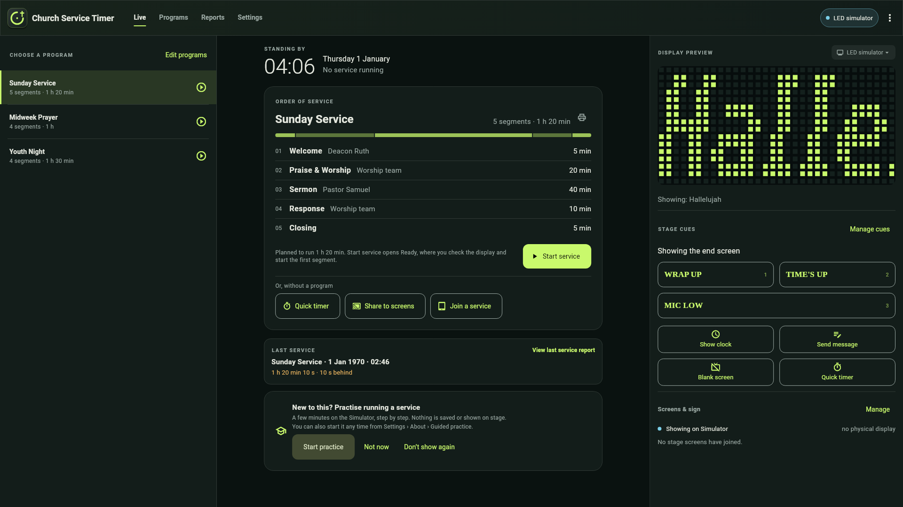
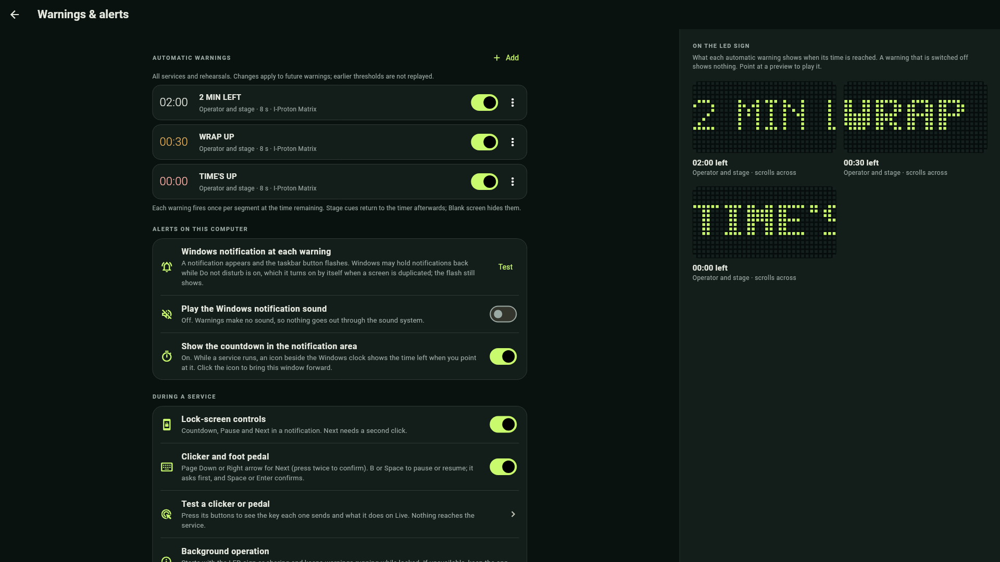

Church Service Timer also runs on a Windows 10 or 11 PC (64-bit), so a service can be run from the laptop at the media desk. It is the same app as on the phone: the same programs, reports, themes and settings. A backup made on a phone restores on the PC, and the other way round.
The Windows app is new. Rehearse on the actual PC, with its projector or screens plugged in, before you rely on it in a service.
Install it
- On the PC, open the download page and download the file ending in
windows-setup.exe. If the page lists only the Android.apk, the Windows installer has not been published for that version yet. - Run the installer. Windows may show Windows protected your PC, because the installer is not code-signed. Click More info, then Run anyway.
- Follow the installer. It installs for your Windows account, so it does not need an administrator password. Tick the desktop icon if you want one.
- Start Church Service Timer from the Start menu.
Some releases also list a file ending in windows-x64.zip. Unzip it anywhere and run church_service_timer.exe; nothing is installed.
The first time it opens
The app opens on Live with the LED simulator, so nothing reaches a real stage yet. In a wide window you see the Live home: your programs on the left, the chosen program's order of service in the middle, and the display preview and cues on the right.


- The window is yours to arrange. Resize it or move it to another monitor. It reopens where you left it.
- Only one copy runs. Starting the app again brings the open window to the front.
- Windows may ask about the network. The first time you share to screens, Windows Defender Firewall asks once whether to allow the app. Allow it on private networks, or phones and browsers cannot reach it.
- Your data stays when the app is removed. Uninstalling leaves your programs, reports and settings in place for the next install.
What is different from the phone
| On a PC | What to know |
|---|---|
| Click, not tap | The app's own wording changes to "click", and "press and hold" becomes "click and hold". |
| Keyboard | Space, Page Down and other keys run the service. Every timer key asks first. See Keyboard, clicker and Commands. |
| Files | Import, export, backups and reports use the usual Windows Open and Save windows. Where the phone says Share, the PC saves the file where you choose. |
| Drag and drop | Drag one program file (.json) or spreadsheet (.csv) from a folder onto the window to import it. It opens in the usual review, and nothing is saved until you confirm. A drop is refused while a service is running or the controls are locked. |
| Open with | Right-click a program file, choose Open with, then Church Service Timer. |
| Printing | Print opens the Windows print window. |
| It stays awake | While a service runs, or screens are shared, the PC does not go to sleep or turn its screen off. If it does sleep, for example when the lid is closed, the timer is still right when it wakes. |
| Closing the window | During a service the app asks Close during the service? Closing stops the timer on stage screens and the LED sign, and stops warnings. The service is saved, and opening the app again carries on from the clock. |
| Second screen | A projector or monitor plugged into the PC can show the stage full screen, with no network or pairing. See Second screen and full screen. |
| LED sign Wi-Fi | Join the sign's Wi-Fi in Windows' own Wi-Fi settings; the app does not switch networks for you. The PC can be on a network cable and the sign's Wi-Fi at the same time. |
| Not on a PC | Scanning a QR code with a camera (join with the six-digit code instead; the PC can still show a QR code for phones) and the phone's battery settings. |
Warnings are silent on a PC
At each warning a Windows notification appears and the app's taskbar button flashes. It makes no sound, because a PC is often plugged into the sound system.


Under Settings › Warnings & alerts › Alerts on this computer:
| Row | What it does |
|---|---|
| Windows notification at each warning | Test shows one now. Windows holds notifications back while Do not disturb is on, and turns that on by itself when the screen is duplicated to a projector. The taskbar button still flashes. |
| Play the Windows notification sound | Off to begin with. Turn it on only if you want each warning to play the sound, through whatever the PC's sound goes to. |
| Show the countdown in the notification area | On to begin with. See below. |
These three choices are kept on that computer and are not part of a backup.
The countdown beside the Windows clock
While a service or Quick timer runs, the app adds its ring-and-cross icon to the notification area, beside the clock.
- Point at the icon to read the time, for example "Sermon · 12:34 left", "Sermon · 01:10 over" or "Paused · Sermon · 12:34". This works while your lyrics or slides program is in front.
- Click the icon to bring the app's window forward.
- The icon only shows the time. It cannot change the service, and it goes when the service ends.
- Windows 11 puts new icons behind the small arrow beside the clock. Drag the icon out onto the taskbar to keep it in view.
If the same PC runs your slides, the Mini timer keeps the countdown and three buttons above them; see Run the service from a PC.
Update the PC
Settings › About › Check for updates works as on the phone: it checks only when you click it, then offers Open the download page. Download the newer installer and run it; it replaces the old version and keeps your data. Update between services, never during one, and update the team's phones and tablets to the same version.